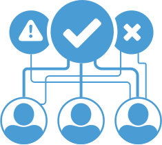
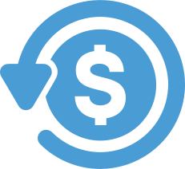
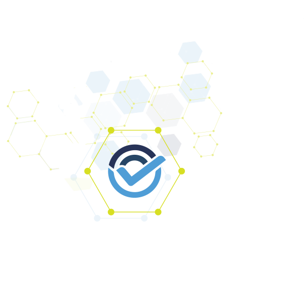

Control Total en Cada Punto de Contacto
Manténgase a la vanguardia del fraude con tecnología de riesgo innovadora.

Flexibilidad
Utilice nuestras reglas predeterminadas o defina umbrales de riesgo personalizados y reglas adaptadas a su apetito por el riesgo y requisitos específicos de defensa contra el fraude.

Escalabilidad
Maneje grandes volúmenes de transacciones y automatice el proceso de verificación, reduciendo la necesidad de revisión manual y minimizando los retrasos en la incorporación.

Exactitud
Nuestro sistema aprende automáticamente de los patrones de datos y mejora la precisión con el tiempo, reduciendo la cantidad de falsos positivos y verificaciones negativas.

Cumplimiento
Adáptese a los requisitos regulatorios globales en constante cambio y verifique toda la información KYC necesaria con sus umbrales de riesgo apropiados en tiempo real.
Datos:
Clave Para la Defensa
- Requisitos KYC en un solo lugar con activación en tiempo real
- Flujos de trabajo de verificación personalizados con lógica en cascada
- Fortalecer los perfiles de los clientes y la defensa contra el fraude
- Verificación de documentos de identidad en más de 150 idiomas
- Servicios de autenticación biométrica de múltiples factores para proteger
- Almacenamiento seguro de los datos de salida de KYC
- Manténgase ágil con un centro de datos en constante evolución
Transacciones Inteligentes
Mantenerse ágil y aprovechar los datos para identificar nuevas fuentes de ingresos.
Habilite al instante servicios esenciales de validación de identidad para un KYC más sólido y autenticación para transacciones seguras. Nuestro análisis de riesgos con respuestas del sistema de flujo de trabajo automatizado, colas de riesgo, motor de reglas enriquecido, aprendizaje automático y mucho más empoderará y apoyará a su equipo de operaciones de fraude.
Monitorear y Mitigar
- Detección temprana para tiempos de respuesta más rápidos
- KYC de varios niveles y aprendizaje automático aseguran precisión
- Inteligencia en tiempo real en un tablero de KPI personalizable en vivo
- Perfiles granulares de clientes para comprender, rastrear y administrar
- Centro de acción en vivo para una revisión de fraudes eficiente
- Optimice los datos y la mitigación de riesgos con inteligencia comercial
Monitoreo de Fraude BI. Informes
Perspectivas de Fraude
Los datos orquestados y el aprendizaje automático brindan recomendaciones de prevención de riesgos a lo largo de su flujo transaccional. Identifique múltiples cuentas, comportamientos sospechosos y patrones que puedan indicar fraude.

Gestión de Casos
Los datos orquestados brindan vistas claras del riesgo. Nuestros flujos de trabajo de verificación automatizados le notificarán las señales de riesgo que requieren intervención humana. Ahorrándole tiempo y esfuerzo en la gestión de transacciones y clientes.

Contracargos
Prevenga, impugne y analice las devoluciones de cargo con eficiencia. Reciba alertas en tiempo real para interceptar y resolver disputas de pago con un centro de resolución de devoluciones de cargo automatizado y un panel en vivo.
BI. Informes
Nuestros expertos en riesgo dedicados trabajarán con usted para establecer B.I. personalizado. informes para garantizar que las reglas de riesgo se optimicen por región o mercado para combatir el fraude sin comprometer las tasas transaccionales.

Cumplir con las Regulaciones Globales
- Detección AML/CTF basada en datos con análisis de riesgo
- Programar revisiones dinámicas para una cartera saludable
- Cruzar los datos para una debida diligencia mejorada
- Acceder a sanciones, listas de bases de datos y más
- Acceder a los requisitos regulatorios
- Informes que incluyen informes de actividades sospechosas
- Datos y transacciones en un solo lugar para una fácil revisión

 Publicado el 17 de julio de 2024
Publicado el 17 de julio de 2024
Presentando AcuityTec PayoutPro: Elevando la integridad operacional con soluciones innovadoras de pagos.
AcuityTec, líder en prevención moderna de fraude y plataforma KYC, se complace en anunciar el lanzamiento de su AcuityTec PayoutPro, una solución especializada diseñada para optimizar la verificación de...
Leer comunicado de prensa

Publicado el 11 de julio de 2024
Aprovechando el KYB automatizado basado en datos. Verificado. Confiable.
La plataforma automatizada de KYB de AcuityTec ofrece una alternativa basada en datos al engorroso proceso de suscripción manual y permite a las empresas identificar y verificar instantáneamente información crítica para identificar rápidamente el riesgo...
Leer comunicado de prensa

Publicado el 3 de julio de 2024
Aceptando la Tecnología KYB Basada en Datos - Mejora la Cumplimiento, Confianza y Eficiencia con la Tecnología KYB.
A medida que el comercio digital evoluciona y los marketplaces en línea crecen, la separación entre KYC y KYB se difumina. La era digital ha transformado la forma en que se realizan las transacciones, con los...
Leer comunicado de prensa